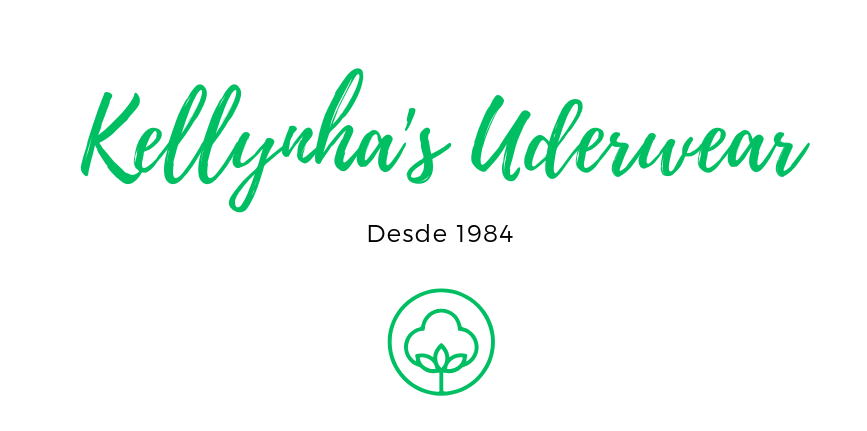

Sistema empresarial
01 / Kellynha App
Gestão interna e processos empresariais
ERP interno criado para centralizar a operação de uma confecção, conectando produção, estoque, expedição, cadastros e controle financeiro em um único sistema.
- Criação, acompanhamento e retorno de ordens de serviço
- Controle de produtos, materiais, grades e estoque mínimo
- Romaneios de carga, expedição e conferência por etiquetas
- Fluxo financeiro, relatórios em PDF e acesso por perfil
Tecnologias utilizadas
Angular 20TypeScriptRxJSSCSSNode.jsExpressPostgreSQLSequelizeJWT